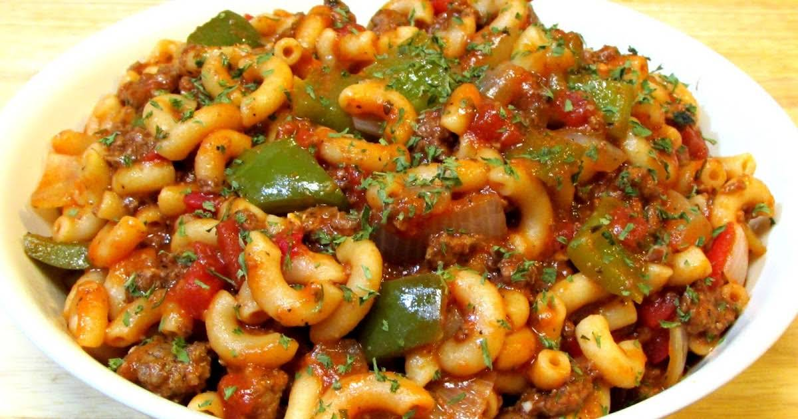

Classic Goulash

Description
American goulash is a traditional mid-west dish to serve for dinner or
take to a potluck. It’s made with really easy and available ingredients
like pasta, ground beef, tomato sauce, and onion.
You can also add some minced garlic or paprika to your American goulash,
even though paprika is not traditionally used in this version.
| PREP TIME: 15 MINS |
| COOK TIME: 30 MINS |
| EFFORT: ★★ |
| YIELD: 8 SERVINGS |
Ingredients
- 2 pounds ground beef (80/20)
- 2 yellow onions , chopped
- 1 green bell pepper , chopped
- 4 cloves garlic , chopped
- 3 cups water
- 29 ounces tomato sauce
- 29 ounces diced tomatoes
- 2 tablespoons Worcestershire sauce
- 1 teaspoon dried oregano
- 1 teaspoon dried basil
- 1 teaspoon kosher salt
- 8 ounces elbow macaroni , uncooked
- Add the ground beef, onions, bell peppers and garlic
to a large dutch oven on medium-high heat and cook it breaking it apart
until it is no longer pink, about 5-7 minutes.
-
Drain most of the fat then add in the remaining ingredients except
the macaroni, bring to a boil then reduce to a low heat and simmer
with a cover on for 15 minutes.
-
Add in the macaroni, mix well then cover and simmer an additional
20 minutes, stirring occasionally before serving